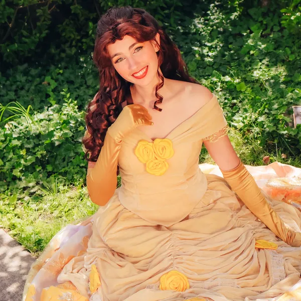

Catie
Founder
- Elsa
- Cinderella
- Belle
- Rapunzel
- Supergirl
- Anna
- Ariel
- Merida
- Batgirl
- Spider-Gwen
- Glinda
- Taylor Swift
- Fawn
- Woodland fairy
- Princess Peach
- Jessie
- Dream character
- Katherine Plumber from Newsies.
- A costume on my someday list
- Barbie as the Island Princess.
- Day job
- When I'm not a princess, I'm lucky enough to be doing surgical robotics research at SickKids!